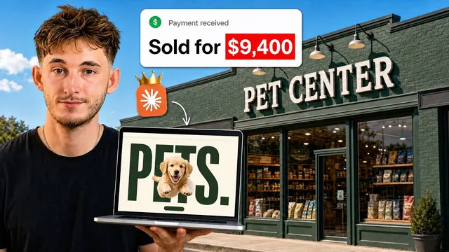

웹사이트 만드는 법 그만 배우고, 파는 법을 배우세요

원본 영상 보기 →
- 완제품을 무료로 주지 마라
- 웹사이트는 미끼일 뿐, 진짜 돈은 월정액 서비스
- 아웃리치는 통화를 요구하지 않는 두 문장으로
한 줄 요약
"AI로 웹사이트 만들어서 몇천 달러에 팔아라"는 조언은 빌드가 아니라 파는 방식 자체가 잘못됐다는 게 요지다. 완성된 웹사이트 전체가 아니라 섹션 하나만 무료로 미끼로 던지고, 진짜 돈은 그 뒤에 붙는 월 정기 서비스(리드 응대·부재중 자동화 등)에서 나온다는 6단계 영업 방법론을 설명한다.
전체 내용 정리
"AI로 웹사이트 팔아라"는 조언을 따르면 왜 클라이언트가 안 생기는가
영상 속 화자는 AI 에이전시를 3년째 운영 중이며 매출 7자리(달러)를 만들었고, 본인이 직접 코칭한 수강생 중 다수가 월 1만 달러를 넘겼다고 밝힌다. 그가 본 문제는 이렇다. 요즘 유튜브에 넘쳐나는 "AI로 5000~1만 달러짜리 웹사이트 만들어서 팔아라" 영상들은 웹사이트를 만드는 기술 자체는 문제가 없다. 실제로 그런 영상 속 결과물은 지금 많은 업체가 실제로 돈 주고 쓰는 웹사이트보다 품질이 낫다. 문제는 그 영상들이 하나같이 "완성됐다"에서 끝나고, 어떻게 실제 고객을 찾아서 파는지는 알려주지 않는다는 점이다. 그 결과 사람들은 완성품을 만들 줄은 알게 되지만 누구에게 팔아야 할지 모른 채 아웃리치 메시지 50통을 보내고 답장을 하나도 못 받고, "AI로 돈 벌기는 사기다"라고 결론 내리고 포기한다. 그래서 이 영상은 빌드 방법이 아니라, 실제로 답장을 받고 클라이언트로 전환시키는 판매 방법론 6단계를 처음부터 끝까지 설명한다.
1단계 — 완성된 웹사이트가 아니라 섹션 하나만 무료로 준다
방법론의 핵심 이론은 이 부분 하나다. 첫째, 웹디자인은 구매자 대부분이 이미 한 번 이상 돈 날려본 카테고리라서 방어적이다. 이런 시장에서는 먼저 피칭할 기회 자체가 주어지지 않으므로, 말보다 결과물을 먼저 보여줘야 스킵당하지 않는다. 둘째, 완성된 결과물(홈페이지 전체)을 통째로 무료로 넘기면 상대방 입장에서 더 살 것이 없다는 걸 바로 알아챈다. 그래서 홈페이지 전체가 아니라 딱 한 섹션만 만들어서 보여준다. 이 섹션 하나는 실제로 90초면 만들 수 있다. 셋째, 상대는 하루 종일 전화 받고 이메일 처리하느라 바쁜 사업주이므로, 보낸 결과물은 60초 안에 훑어볼 수 있어야 한다. 그리고 더 중요한 원칙은, 아웃리치를 보내고 "예스"를 받기 전까지는 아무것도 만들지 않는다는 것이다. 콜드 이메일 업계에는 사회적 증거도 케이스 스터디도 없이 딱 두 문장짜리 이메일 하나로 리스트 요청 답장 1,200건, 전화번호 요청 400건, 옵트인 1,000건 이상을 받은 유명한 사례가 있다. 즉 50명에게 아웃리치를 보내 10명이 "예스"라고 하면, 그때 가서 딱 그 10개만 만들면 된다.
2단계 — 어디서 누구에게 보낼지 정하고 두 문장으로 아웃리치한다
이 방법은 아무 업종에나 통하지 않는다. 구글맵에서 업종+지역으로 검색해서(배관공, 지붕공사, 치과, 메드스파 등) 전화가 곧 매출 창구인 업종, 그중에서도 건당 1만 달러 이상 받을 수 있는 하이티켓 업종을 고른다. 스폰서 광고를 돌리고 있는 업체는 이미 리드 수요가 충분하다는 신호이므로 우선순위로 본다. 이후 직접 전화를 걸어 5분 안에 응답하는지, 시스템이 제대로 갖춰져 있는지 확인한다. 같은 업종·지역에서 표본 10곳 정도를 확인했을 때 대다수가 5분 안에 응답하지 못하면 그건 명백한 문제이고, AI 전화·SMS 에이전트로 해결해줄 여지가 있다는 뜻이다. 메타 광고 라이브러리에서 같은 방식으로 업체를 찾을 수도 있다. 아웃리치 메시지는 딱 두 문장이다. 규칙은 세 가지. 절대 통화를 요청하지 않는다(케이스 스터디도 없는 상태에서 통화를 요구하면 바로 삭제당한다). 상대의 이름과 이미 만들어둔 결과물을 구체적으로 언급한다("당신 업체용 홈페이지 섹션을 하나 만들어봤어요, 보실래요?" 같은 식으로, 아무것도 요구하지 않고 이미 존재하는 걸 제안하는 형태). 사람이 직접 쓴 것처럼, 조사한 티가 나는 한 줄을 넣는다 — 다른 경쟁자들의 아웃리치는 전부 정형화된 템플릿처럼 읽히기 때문에, 이 한 줄이 각인 효과를 만든다.
3~4단계 — 영상으로 컨버전시키고, 결정적 질문 하나를 던진다
상대가 "예스"라고 답하면 파일만 보내지 않는다. 2~3분짜리 영상으로 직접 만든 것을 설명하며 보여준다(주로 Loom 사용). 이 방식이 통하는 이유는 두 가지다. 보내는 사람은 원하는 만큼 다시 찍을 수 있어 최상의 컨디션으로 녹화할 수 있고, 받는 사람은 방어적인 통화 자리가 아니라 본인이 편한 시간에 여유롭게 시청하므로 더 수용적이다. 영상에는 별도 인트로 없이 "무엇을 만들었고, 이게 당신에게 무엇을 해줄지, 어떤 결과가 나올지"만 담으면 되고, "이거 보고 안 맞으면 그냥 말씀해주세요, 더 연락 안 드릴게요" 같은 한 줄을 함께 보낸다. 이후 상대가 답장하면 대화가 시작되는데, 이때 던져야 할 결정적 질문이 하나 있다. "그 폼(문의 양식)에 입력된 내용은 어디로 가나요? 그게 도착하면 무슨 일이 일어나나요?"다. 실제 사례로, 400세대·직원 12명 규모의 부동산 관리 업체와 작업했을 때, 그들은 세입자 이메일 응대에 치여 있다고 느꼈지만 진짜 문제는 리드가 6개의 다른 채널로 흩어져 들어오고 평균 3~4시간 만에 응답되면서 응답 속도만으로 리드의 약 30%를 놓치고 있다는 것이었다. 이걸 개선해서 응답 시간을 약 18초까지 줄였고, 원래 문의했던 세입자 이메일 문제는 오히려 부수적인 해결 사항이었다. 대부분의 업체 내부에서는 아무도 이 문제를 이런 관점으로 보지 않는다는 점이 핵심이다.
5~6단계 — 진짜 파는 것은 웹사이트가 아니라 그 뒤에 붙는 월 정기 서비스다
상대가 "폼 제출하면 어디로 가느냐"는 질문에 답하는 내용이 곧 실제 오퍼가 된다. 리드 캡처, 부재중 응대, 팔로업 속도, 예약, 기존 고객 리스트 재활성화 같은 문제들이 드러나고, 여기에 스피드투리드 에이전트 같은 걸 붙이면 월 500달러 안팎의 월정액 서비스로 만들 수 있다. 섹션 하나(무료 데모)는 어디까지나 문을 열기 위한 수단이고, 신뢰를 얻고 나면 그 뒤에 붙는 월간 서비스가 진짜 비즈니스가 된다. 실제 빌드 작업(6단계)은 상대가 "예스"라고 답한 뒤에만 시작한다 — 미리 만들어두지 않는다는 원칙은 처음부터 끝까지 일관된다. 화자는 이 구조가 웹사이트에만 국한되지 않고, 콜드 이메일·광고 운영 등 다른 어떤 "문 여는 제안(foot-in-the-door offer)"에도 동일하게 적용된다고 강조한다.
핵심 인사이트
- 완제품을 무료로 주지 마라: 무료로 완성품을 다 넘기면 상대는 더 살 이유가 없다고 느낀다. 딱 90초 안에 만들 수 있는 섹션 하나만 미끼로 쓰고, 나머지는 "예스" 받은 뒤에 만들어야 시간과 노력이 낭비되지 않는다.
- 웹사이트는 미끼일 뿐, 진짜 돈은 월정액 서비스: 업체가 실제로 아쉬워하는 건 웹사이트 디자인이 아니라 리드 응답 속도·부재중 대응 같은 운영 문제다. "폼 제출하면 어디로 가나요"라는 질문 하나로 이 문제를 드러내고 월 정기 서비스로 전환하는 게 핵심 수익 구조다.
- 아웃리치는 통화를 요구하지 않는 두 문장으로: 신뢰가 전혀 없는 상태에서 통화를 요청하면 바로 무시당한다. 이미 만든 걸 조건 없이 보여주겠다는 두 문장 메시지가 반응률을 높인다.
오늘 당장 해볼 것
- 내 전문 분야(한의원·법률·세무 상담 등)에서 "전화·문의가 매출로 바로 연결되는" 잠재 고객군을 구글맵이나 메타 광고 라이브러리로 10곳만 골라, 문의 폼을 실제로 제출해보고 응답 속도(특히 5분 이내인지)를 직접 확인해본다.
- 응답이 느리거나 문의가 방치되는 곳을 발견하면, "문의 폼 제출 시 어디로 전달되고 누가 언제 확인하는지"를 업체에 직접 물어보는 것부터 시작해, 그 답변을 근거로 자동화 서비스(예: 5분 내 자동 회신, 리드 알림 통합)를 제안할 소재로 기록해둔다.
- 자동화 업체를 알아볼 때는 "완성된 결과물 전체"보다 "핵심 문제 하나를 해결하는 작은 샘플"을 먼저 무료로 보여줄 수 있는지 물어보고, 그 샘플의 품질로 업체의 실력을 판단해본다.